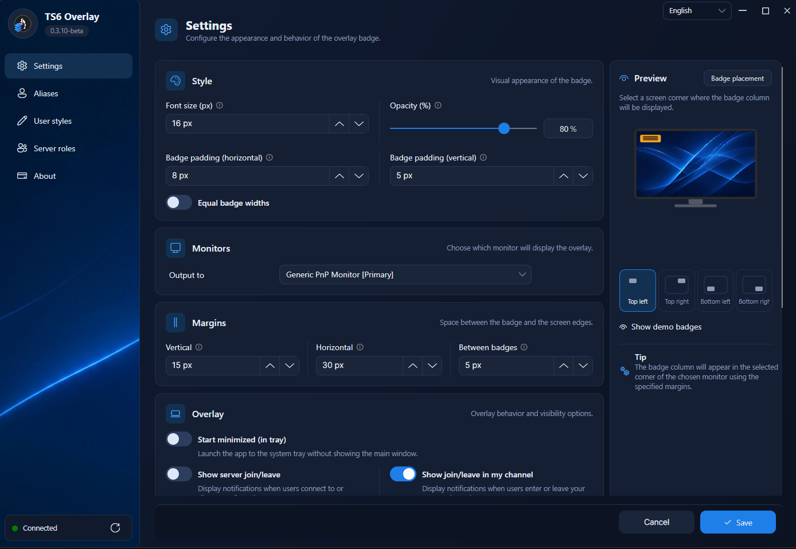
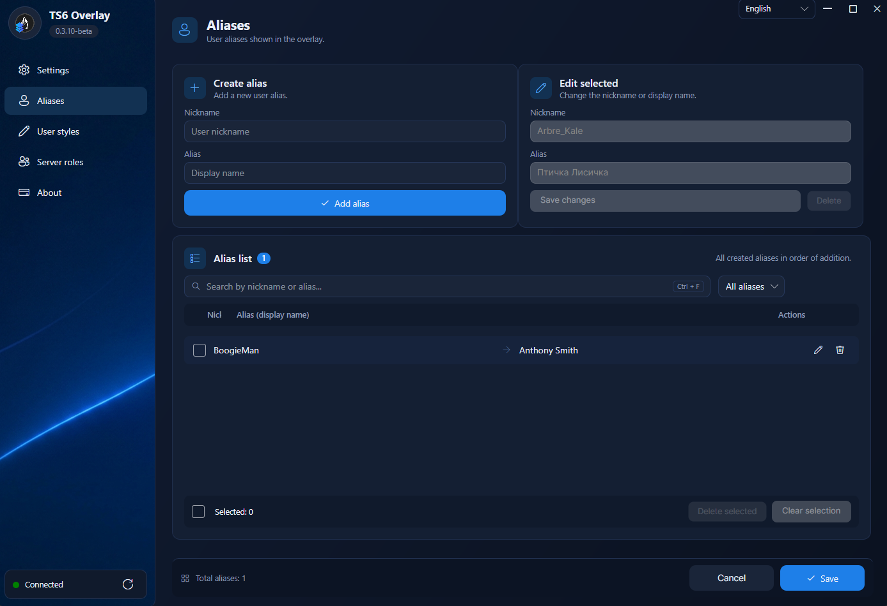
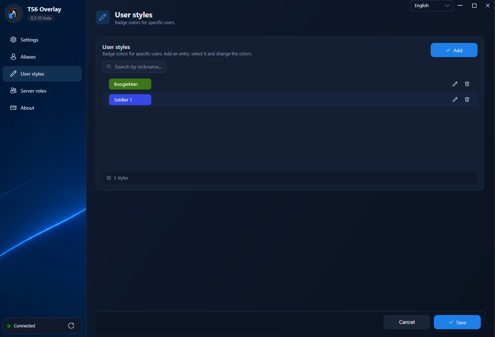
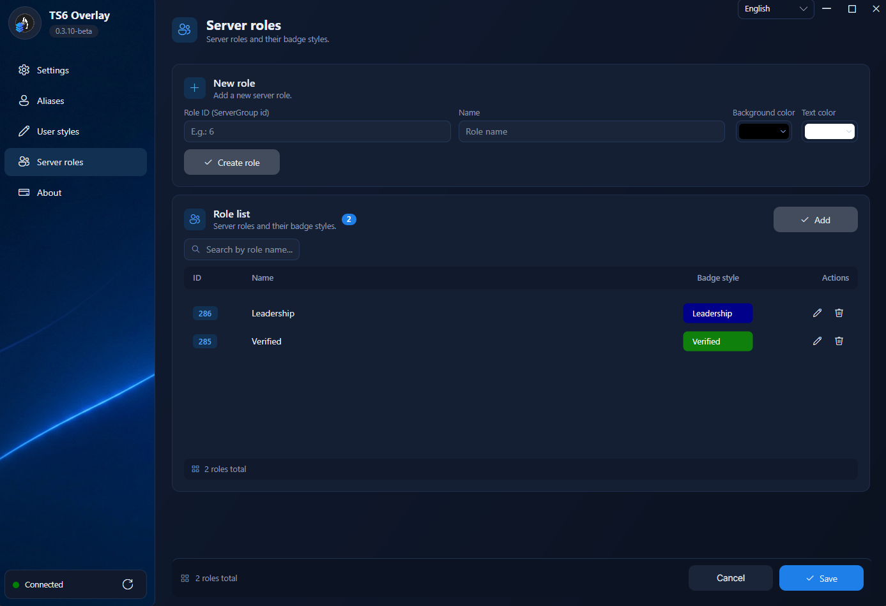

Speaking badges
Nicknames appear over your game in real time — a slim column that never blocks the action.
TS6 Overlay shows slim speaking badges with avatars and server role colors on top of your games. Lightweight and customizable — almost invisible until someone speaks.
Designed to be informative yet unobtrusive — every detail is configurable.
Nicknames appear over your game in real time — a slim column that never blocks the action.
Badges are painted automatically with TeamSpeak server group colors. At a glance you know who leads.
Show the user's avatar next to their badge — on the left or the right, your choice.
Rename any user in the overlay. Messy nicknames become clean, readable names.
Per-user badge colors, gradients and presets — highlight friends, streamers or teammates.
Optional join/leave pop-ups for the server or just your channel. Always know who's around.
Pick the output screen and one of nine positions. Margins and spacing are up to you.
English, Russian, German and Chinese — the settings app speaks your language.
The app checks GitHub releases and lets you update in one click. Never miss a fix.
Dark, fast and consistent — with live preview of every change. Click to zoom.




No accounts, no configuration files, no command line (unless you want one).
Grab the package for your OS from GitHub Releases and run it. All builds are self-contained — nothing else to install.
Start TeamSpeak 6 with the Remote Apps SDK enabled and paste its API key into the overlay. It usually picks the key up automatically.
Choose a monitor and a corner. Badges appear by themselves when someone speaks — that's it.
TeamSpeak 6 must be running with Remote Apps SDK enabled — the overlay reads speaking data from it locally.
Every package is self-contained: the .NET runtime is bundled, so nothing else is required.
Modern MSI installer (WiX 5) for x64. The overlay lives in the system tray.
Download .msiDrag-and-drop .dmg image or a .pkg installer wizard. Universal build for Apple Silicon and Intel.
Download .dmgUnsigned build: right-click → Open on first launch, or run xattr -d com.apple.quarantine '/Applications/TS6 Overlay.app'
Debian package for amd64. Works on X11; Wayland support is on the roadmap.
sudo apt install ./TS6Overlay-<version>-linux-amd64.deb
Yes. Use it, modify it, share it — no strings attached. If you find it useful, you can support the author.
No. The overlay is built exclusively for TeamSpeak 6 and its Remote Apps SDK.
Nowhere. The overlay talks only to the TeamSpeak 6 client on your machine. The sole exception is the update check against github.com.
No — the overlay window is click-through and automatically raises itself, so your input always reaches the game.
Wayland isn't supported yet: the overlay can't raise above windows there. Use X11 for now — everything works. Support is planned with the Avalonia 12 update.
Yes — pick any connected monitor and one of nine badge positions, with fine-tunable margins.
Free to use and set up in under a minute. Your teammates already see the badges — join them.